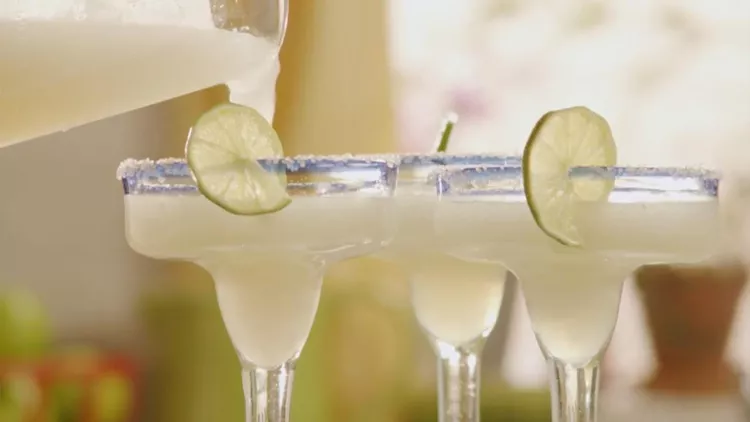

Margaritas

Description
Try this limeade margarita the next time you are making margaritas. It's an easy twist on a favorite cocktail!
Ingredients
- 4 cups crushed ice, or as needed
- 1 (6 ounce) can frozen limeade concentrate
- 6 fluid ounces tequila
- 2 fluid ounces triple sec
Steps
- Fill blender with crushed ice. Pour in limeade concentrate, tequila, and triple sec. Blend until smooth. Pour into glasses and serve.